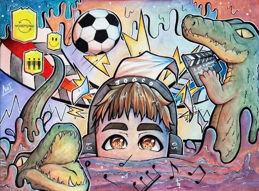
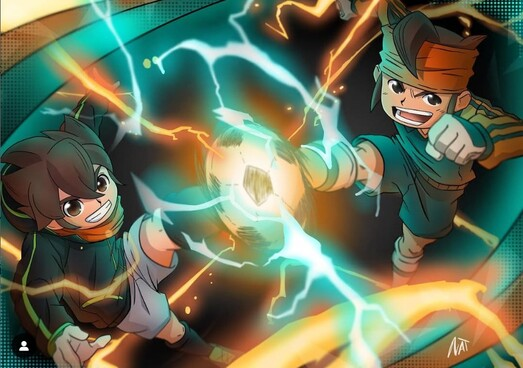
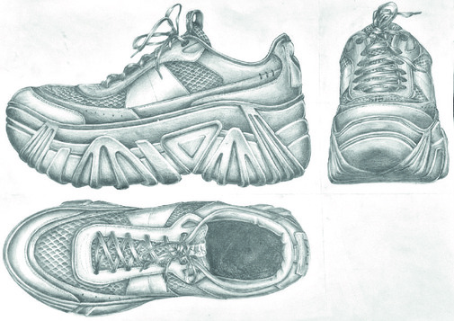

CFGS en Desarrollo de Aplicaciones Multiplataforma-VIOD ENTI Escola de Noves Tecnologies Interactives, Barcelona 2024 - Actualidad
 Retrato subjetivo a un desconocido (2023)  Poster fanart de Inazuma Eleven (2023)  Vistas de un zapato (2024)